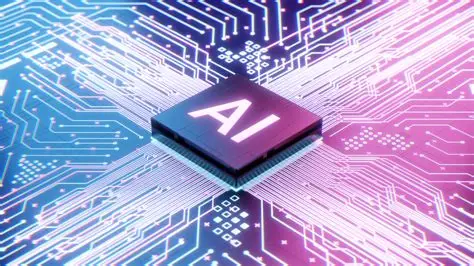

¿Que es la IA?
La inteligencia artificial (IA) es un conjunto de tecnologías que permiten a las máquinas procesar información, aprender de los datos y, en cierta medida, simular el razonamiento humano. Desde sus inicios en la década de 1950, la IA ha evolucionado notablemente gracias al crecimiento exponencial en la potencia de procesamiento y a la disponibilidad masiva de datos. Aunque sus aplicaciones pueden ser muy beneficiosas, también es importante considerar sus implicaciones ambientales, que muchas veces pasan desapercibidas.

Concientización ambiental en la era de la inteligencia artificial
La rápida adopción de la IA en todo el mundo está generando una transformación profunda, no solo en la economía y el empleo, sino también en el medio ambiente. Aunque la IA tiene el potencial de ayudarnos a enfrentar retos ecológicos, también plantea riesgos significativos si no se implementa de manera responsable. A medida que esta tecnología se integra en sectores clave como la industria, la salud, el transporte y la agricultura, su infraestructura —particularmente los centros de datos y sistemas de entrenamiento de modelos— consume enormes cantidades de energía y recursos naturales.
Estamos frente a una revolución digital que puede impulsar el crecimiento global, pero también podría agravar problemas ambientales existentes. Por eso, es urgente tomar conciencia del impacto ecológico que tiene el desarrollo y uso de la IA, y aplicar políticas que fomenten su sostenibilidad.
Una IA comprometida con el planeta
La inteligencia artificial no solo debe ser innovadora y eficiente, sino también sostenible. Las soluciones tecnológicas deben ir acompañadas de marcos normativos sólidos que contemplen el respeto al medio ambiente. En este sentido, es fundamental que los gobiernos, las empresas y los ciudadanos trabajen juntos para que la IA contribuya a construir un mundo más justo y ecológicamente responsable.
La concienciación ambiental implica reconocer que detrás de cada modelo de IA hay un consumo real de electricidad, agua y materiales electrónicos. Por ejemplo, entrenar modelos de lenguaje avanzados puede requerir miles de horas de computación, lo que se traduce en un alto consumo energético. A esto se suma el impacto de los residuos electrónicos generados por los servidores y equipos obsoletos.
Retos ambientales de la inteligencia artificial
La IA ya está siendo utilizada para enfrentar desafíos ambientales, como el monitoreo de la deforestación, la detección de emisiones de gases contaminantes o la gestión inteligente de residuos. Sin embargo, su propia huella ecológica también debe ser regulada y minimizada. Los centros de datos, por ejemplo, consumen grandes volúmenes de agua para refrigeración y energía proveniente, en muchos casos, de fuentes no renovables. Además, el crecimiento acelerado de estas infraestructuras puede incrementar la producción de desechos electrónicos, que muchas veces no se reciclan adecuadamente.